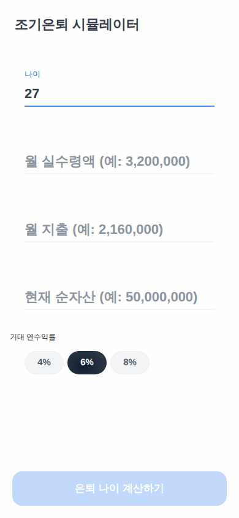
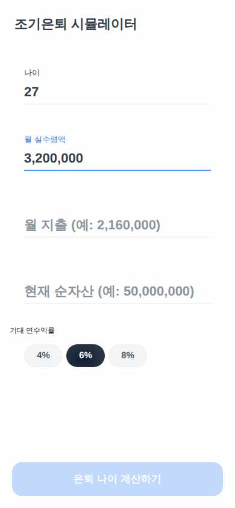
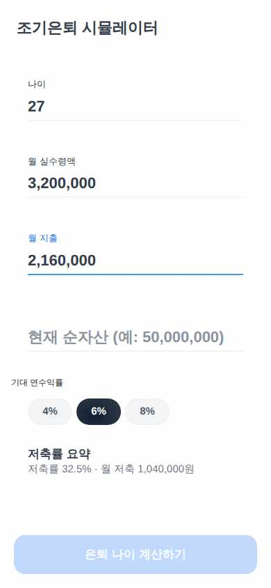
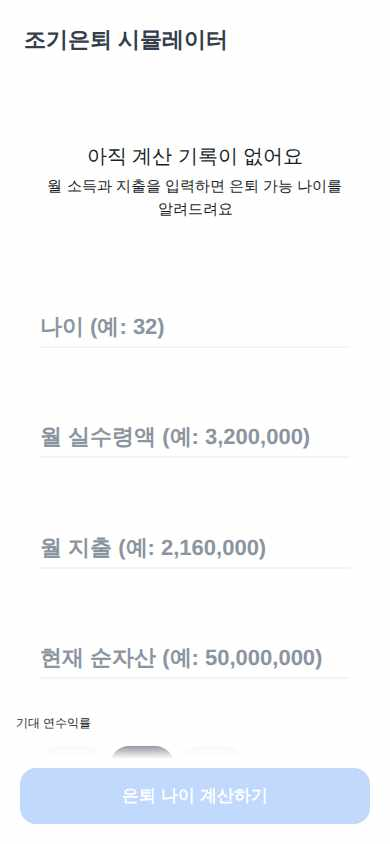
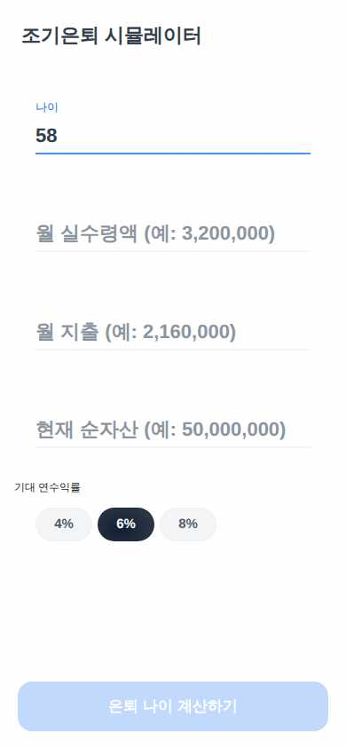
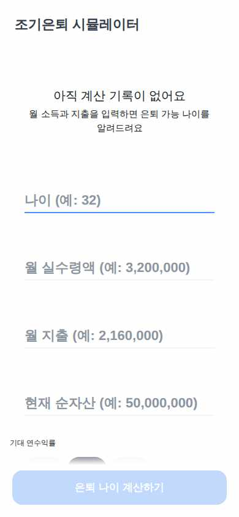

EarlyRetireSim
가상 사용자 3명 중 2명 완주 · 2026-09-08 18:43
미완주27세 IT 스타트업 마케터. 퇴근길 지하철에서 한 손으로 앱을 켜고, 로딩이 2초만 넘어도 뒤로 나가버리는 성격. 파이어(FIRE)라는 말은 들어봤지만 4% 룰이 뭔지는 모른다. 스마트폰은 능숙하지만 설명 텍스트는 거의 읽지 않고 큰 숫자와 버튼만 보고 탭한다. 3탭 안에 '몇 살에 은퇴 가능'이 안 나오면 이탈한다.
과업 Home에서 나이 27 / 월 실수령액 3,200,000 / 월 지출 2,160,000 / 현재 순자산 20,000,000을 빠르게 입력하고, 입력 영역 하단의 실시간 저축률 요약(AC-F1-3)을 확인한 뒤 바로 '은퇴 나이 계산하기'를 누른다.

1 "나이 (예: 32)"에 "27" 입력 → 성공(드라이버 보정: placeholder-fallback — 앱 결함 아님)

2 "월 실수령액 (예: 3,200,000)"에 "3200000" 입력 → 성공(드라이버 보정: placeholder-fallback — 앱 결함 아님)

3 "월 지출 (예: 2,160,000)"에 "2160000" 입력 → 성공(드라이버 보정: placeholder-fallback — 앱 결함 아님)

4 "현재 순자산 (예: 50,000,000)"에 "20000000" 입력 → 성공(드라이버 보정: placeholder-fallback — 앱 결함 아님)

6 완주 선언
심사: 결과 화면에 '저축률 32.5% · 월 저축 1,040,000원' 같은 값이 보이지 않는다. '저축률' 항목에는 숫자값 대신 '+10%p'라는 변화량만 표시되고, 월 저축액 수치는 어디에도 없다. 입력 직후 입력 영역 하단에 SPEC 공식대로 계산된
- 🟡 [confusing_copy · 스텝 6] 결과 화면 '현재' 옆 '저축률 +10%p'만 표시되고 기준 수치나 비교 대상이 없어 무엇 대비 +10%p인지 알기 어려움
6스텝 · 드라이버 보정 입력 4회(라벨 폴백·날짜 정규화 — 앱 결함 아님)
완주58세 중견기업 관리직. 노안이라 글자를 하나씩 천천히 읽고, 화면을 이동할 때마다 '내가 넣은 값이 지워지지 않았나' 걱정해 뒤로가기를 자주 누른다. 스마트폰은 카카오톡·은행 앱 정도만 쓰며 새 앱은 조심스럽게 다룬다. 입력한 숫자가 다시 살아나는지 반드시 눈으로 확인해야 안심한다.
과업 나이 58 / 월 실수령액 5,000,000 / 월 지출 3,000,000 / 현재 순자산 300,000,000을 천천히 입력해 계산 버튼을 눌러 결과 화면까지 간 뒤, 상단 뒤로가기로 Home에 돌아와 자신이 입력했던 값이 그대로 남아 있는지 확인한다.

1 "나이 (예: 32)"에 "58" 입력 → 성공(드라이버 보정: placeholder-fallback — 앱 결함 아님)

2 "월 실수령액 (예: 3,200,000)"에 "5000000" 입력 → 성공(드라이버 보정: placeholder-fallback — 앱 결함 아님)
3 "월 지출 (예: 2,160,000)"에 "3000000" 입력 → 성공(드라이버 보정: placeholder-fallback — 앱 결함 아님)
4 "현재 순자산 (예: 50,000,000)"에 "300000000" 입력 → 성공(드라이버 보정: placeholder-fallback — 앱 결함 아님)

7 완주 선언
심사: 뒤로가기 후 Home 화면에서 나이=58, 월 실수령액=5,000,000, 월 지출=3,000,000, 현재 순자산=300,000,000이 천 단위 콤마 포함으로 모두 복원되어 표시되고 있으며 Empty State는 나타나지 않음. 화면 증거상 성공기
7스텝 · 드라이버 보정 입력 4회(라벨 폴백·날짜 정규화 — 앱 결함 아님)
완주34세 백엔드 개발자. 계산기 앱을 보면 먼저 부수려 든다. 빈 값 제출, 0원, 음수(-100), 소수점(1.5), '삼백만' 같은 한글, 이모지, 앞자리 0(007), 나이 999 같은 값을 일부러 넣어 필터링과 에러 문구를 확인한다. 항상 다크모드로 쓰며 대비가 깨진 텍스트나 하드코딩 색을 바로 알아챈다. 마지막에는 정상 값을 넣고 계산 결과가 4% 룰과 실제로 맞는지 손으로 검산한다.
과업 다크모드에서 나이·금액 필드에 -100, 1.5, 007, 한글/이모지, 빈 값 등을 넣어 숫자 필터링(AC-INPUT-FORMAT)과 빈 필드 help 문구를 확인한 뒤, 최종적으로 나이 34 / 월 실수령액 6,000,000 / 월 지출 2,000,000 / 현재 순자산 50,000,000을 입력해 결과 화면의 목표 자산 값을 검산한다.

1 "나이 (예: 32)"에 "-100" 입력 → 성공(드라이버 보정: placeholder-fallback — 앱 결함 아님)

6 "나이 (예: 32)"에 "999" 입력 → 성공(드라이버 보정: placeholder-fallback — 앱 결함 아님)
8 "월 실수령액 (예: 3,200,000)"에 "6000000" 입력 → 성공(드라이버 보정: placeholder-fallback — 앱 결함 아님)
10 "현재 순자산 (예: 50,000,000)"에 "50000000" 입력 → 성공(드라이버 보정: placeholder-fallback — 앱 결함 아님)
심사: 결과 화면에 목표 자산 ₩600,000,000이 표시되며, 이는 월 지출 2,000,000×12×25=600,000,000의 4% 룰 공식과 일치한다. 이상 입력(-100, 1.5, 007, 삼백만, 😀, 999)은 이후 정상값(34, 6000000
- 🟡 [visual_bug · 스텝 4] 다크모드가 아니라 라이트/화이트 배경으로 렌더링됨 — 사용자는 항상 다크모드 사용자인데 대비 확인 불가
- 🟡 [visual_bug · 스텝 5] 다크모드로 설정했는데 화면이 흰 배경/검정 텍스트의 라이트 테마로 보임 — 다크모드 미적용 의심
- 🔴 [visual_bug · 스텝 7] 나이 필드에 -100, 1.5, 007, '삼백만', 😀, 999 등 비정상 값이 모두 필터링 없이 그대로 입력됨 (AC-INPUT-FORMAT 미적용, 범위 검증 없음)
- 🟡 [visual_bug · 스텝 12] 다크모드로 앱을 사용 중인데 결과 화면(예상 은퇴 나이/목표 자산) 배경이 흰색 계열로 하드코딩된 것처럼 보여 시스템 다크모드와 불일치하는 라이트 테마 톤이 노출됨.
12스텝 · 드라이버 보정 입력 7회(라벨 폴백·날짜 정규화 — 앱 결함 아님)
각 화면은 가상 사용자가 그 다음 동작을 정하기 직전에 본 것이다. 캡션은 그 화면에서 실제로 한 동작이다. 마지막 장이 성공/실패 판정의 근거다. 화면을 누르면 원본 크기로 열린다.
브라우저에서 돌린 결과라 토스 SDK(로그인·결제·햅틱)는 비활성이다 — UI와 흐름만 판단 대상이다.
{kind=link}
{kind=link}
{kind=link}
{kind=link}
{kind=link}
{kind=link}
{kind=link}
{kind=link}
{kind=link}
{kind=link}
{kind=link}
{kind=link}
{kind=link}
{kind=link}
{kind=link}
{kind=link}
{kind=link}
{kind=link}
{kind=link}